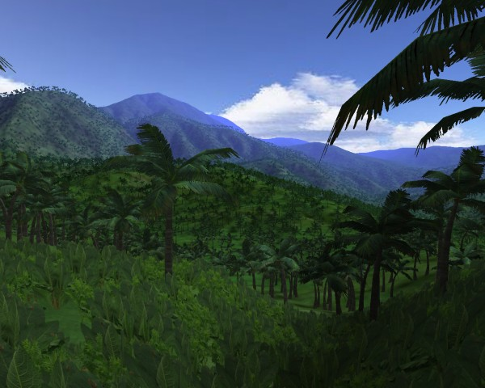

- Generated by
 1.9.1
1.9.1
|
PagedGeometry
1.3.0
|
Although the PagedGeometry engine is fairly simple and easy to use, there are some advanced features that may be difficult to learn on you own. This API reference is here for your convenience, to aid you in learning how to get the most out of the PagedGeometry engine.
Every feature of the engine is covered here in detail, so you won't be left in the dark about any aspect of PagedGeometry's use (however, some of the internal workings of the engine are not documented in here - you'll have to refer to the source code comments for that).
The PagedGeometry engine is an add-on to the OGRE Graphics Engine, which provides highly optimized methods for rendering massive amounts of small meshes covering a possibly infinite area. This is especially well suited for dense forests and outdoor scenes, with millions of trees, bushes, grass, rocks, etc., etc.

Expansive jungle scene with 240,000 trees and animated vegetation
Paged geometry gives you many advantages over plain entities, the main one being speed: With proper usage of detail levels, outdoor scenes managed by PagedGeometry can be >100x faster than plain entities. Another advantage is that the geometry is paged; in other words, only entities which are immediately needed (to be displayed) are loaded. This allows you to expand the boundaries of your virtual world almost infinitely (only limited by floating point precision), providing the player with a more realistically scaled game area.
When you're ready to start learning how to use PagedGeometry, the best place to start is with Tutorial 1: Getting Started. The tutorials will teach you how to use many important PagedGeometry features, step by step. This API reference isn't recommended for learning, but is a valuable resource when you need specific in-depth information about a certain function or class.
Copyright (c) 2007 John Judnich
This software is provided 'as-is', without any express or implied warranty. In no event will the authors be held liable for any damages arising from the use of this software. Permission is granted to anyone to use this software for any purpose, including commercial applications, and to alter it and redistribute it freely, subject to the following restrictions:
1. The origin of this software must not be misrepresented; you must not claim that you wrote the original software. If you use this software in a product, an acknowledgment in the product documentation would be appreciated but is not required.
2. Altered source versions must be plainly marked as such, and must not be misrepresented as being the original software.
3. This notice may not be removed or altered from any source distribution.